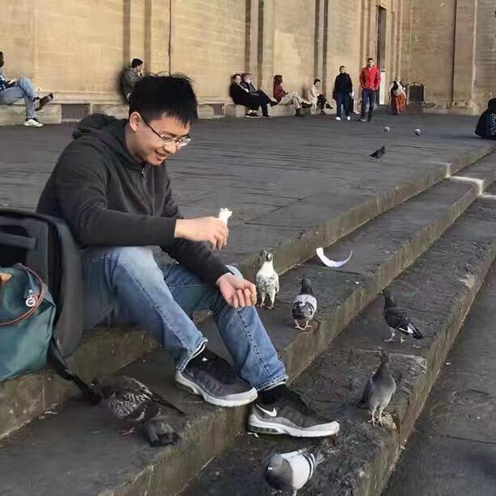

|
Ying-Cong Chen
Email: yingcong.ian.chen@gmail.com
“Two roads diverged in a wood, and I—
I took the one less traveled by,
And that has made all the difference.”
|

|
Biography
I am a Postdoctoral Research Associate at Computer Science & Artificial Intelligence Lab of Massachusetts Institute of Technology, working with Prof. Dina Katabi. I earned my Ph.D. degree from the CSE department of the Chinese University of Hong Kong. My advisor is Prof. Jiaya Jia. Prior to that, I received my Bachelor and Master degree from Sun Yat-sen University, supervised by Prof. Jianhuang Lai and Prof. Wei-Shi Zheng. My research interest includes computer vision, machine learning, and artificial intelligence. My ultimate goal is to develop intelligent visual systems to free people from heavy, tedious and complicated works.
-
Ying-Cong Chen, Xiaogang Xu and Jiaya Jia. Domain Adaptive Image-to-image Translation. IEEE Conference on Computer Vision and Pattern Recognition (CVPR), 2020.
-
Yi Wang, Ying-Cong Chen, Xiangyu Zhang, Jian Sun and Jiaya Jia. Attentive Normalization for Conditional Image Generation. IEEE Conference on Computer Vision and Pattern Recognition (CVPR), 2020.
-
Jinrui Yang, Wei-Shi Zheng, Qize Yang, Ying-Cong Chen, Qi Tian. Spatial-Temporal Graph Convolutional Network for Video-based Person Re-identification. IEEE Conference on Computer Vision and Pattern Recognition (CVPR), 2020.
-
Ying-Cong Chen, Xiaogang Xu and Jiaya Jia. Homomorphic latent space interpolation for unpaired image-to-image translation. (oral, Acceptance Rate: 5.6%) IEEE Conference on Computer Vision and Pattern Recognition (CVPR), 2019. code
-
Ying-Cong Chen, Xiaohui Shen, Zhe Lin, Xin Lu, I-Ming Pao, and Jiaya Jia. Semantic component decomposition for face attribute manipulation. IEEE Conference on Computer Vision and Pattern Recognition (CVPR), 2019.
-
Xiaogang Xu, Ying-Cong Chen, and Jiaya Jia. View independent generative adversarial network for novel view synthesis. (oral, Acceptance Rate: 2.1%) In Proceedings of the IEEE International Conference on Computer Vision (ICCV), 2019
-
Ying-Cong Chen, Huaijia Lin, Michelle Shu, Ruiyu Li, Xin Tao, Yangang Ye, Xiaoyong Shen, and Jiaya Jia. Facelet-bank for fast portrait manipulation. IEEE Conference on Computer Vision and Pattern Recognition (CVPR), 2018. code
-
Ying-Cong Chen, Xiaoyong Shen, and Jiaya Jia. Makeup-go: Blind reversion of portrait edit. (oral, Acceptance Rate: 2.09%) In Proceedings of the IEEE International Conference of Computer Vision (ICCV), 2017.
-
Ying-Cong Chen, Xiatian Zhu, Wei-Shi Zheng, and Jian-Huang Lai. Person re-identification by camera correlation aware feature augmentation. IEEE Transaction on Pattern Analysis and Machine Intelligence (TPAMI), 2017.project page
-
Ying-Cong Chen, Wei-Shi Zheng, Jian-Huang Lai, and Pong-Chi Yuen. An asymmetric distance model for cross- view feature mapping in person re-identification. IEEE Transaction on Circuits and Systems for Video Technology (TCSVT), 2017.code
-
Ying-Cong Chen, Wei-Shi Zheng, and Jian-Huang Lai. Mirror representation for modeling view-specific transform in person re-identification. In International Joint Conference on Artificial Intelligence (IJCAI), 2015. code, feature
-
Shangxuan Wu, Ying-Cong Chen, and Wei-Shi Zheng. An enhanced deep feature representation for person re-identification. In IEEE Winter Conference on Applications of Computer Vision (WACV), 2016.
-
Weixiong He, Ying-Cong Chen, and Jianhuang Lai. Cross-view transformation based sparse reconstruction for person re-identification. In International Conference on Pattern Recognition (ICPR), 2016.
-
Xiaoyong Shen, Ying-Cong Chen, Xin Tao, and Jiaya Jia. Convolutional neural pyramid for image processing. In arXiv, 2017.
Academic Services
- Conference Review:
International Conference on Computer Vision and Pattern Recognition (CVPR) 2020.
International Joint Conference on Artificial Intelligence (IJCAI) 2020.
International Conference on Computer Vision (ICCV) 2019.
International Conference on Computer Vision and Pattern Recognition (CVPR) 2019.
AAAI Conference on Artificial Intelligence (AAAI) 2019.
British Machine Vision Conference (BMVC) 2019.
European Conference on Computer Vision (ECCV) 2018.
International Joint Conference on Artificial Intelligence (IJCAI) 2018.
International Conference on Computer Vision (ICCV) 2017.
AAAI Conference on Artificial Intelligence (AAAI) 2017.
- Journal Review:
International Journal on Computer Vision (IJCV).
IEEE Transaction on Image Processing (TIP).
NNeurocomputing.
IEEE Access.